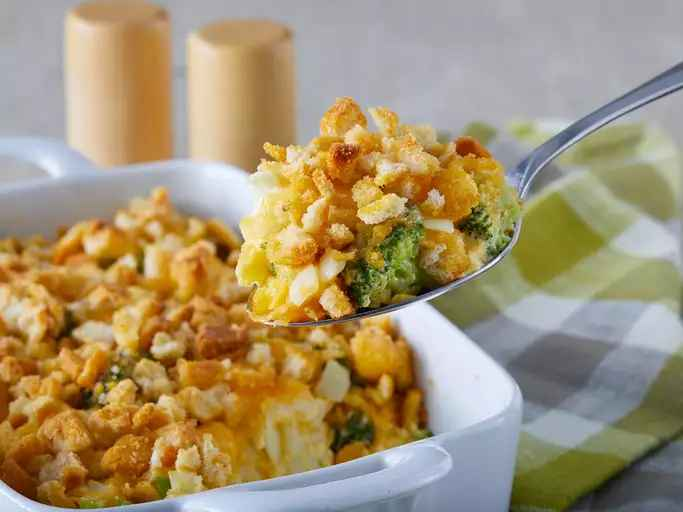

Broccoli Cauliflower Casserole

Description
This broccoli and cauliflower casserole is always a hit! The croutons on top give it that crunchy dimension that everyone will love.
Ingredients
- 2 cups broccoli
- 2 cups cauliflower
- 2 large eggs
- 1 cup shredded cheddar cheese, divided
- 1/2 cup mayonnaise
- 1/2 cup chopped onion
- 1/2 cup melted butter
- 1 (15 oz) package seasoned croutons, crushed
Steps
- Preheat the oven to 350 degrees F (175 degrees C).
- Place broccoli and cauliflower in separate saucepans, cover with water, and bring to a boil; cook until tender, 3 to 4 minutes. Drain and arrange in an 11x7-inch baking dish.
- Beat eggs in a bowl until creamy; stir in 1/2 cup Cheddar cheese, mayonnaise, and onion and pour over vegetables. Pour melted butter on top and sprinkle with remaining 1/2 cup Cheddar cheese. Scatter crushed croutons evenly on top.
- Bake in the preheated oven until browned and bubbling, about 40 minutes.